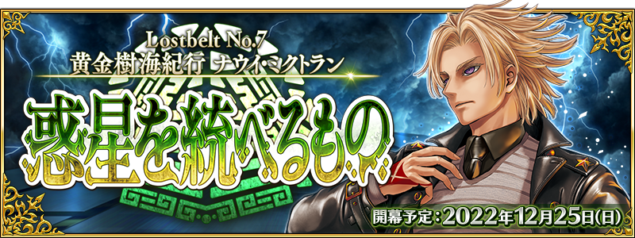
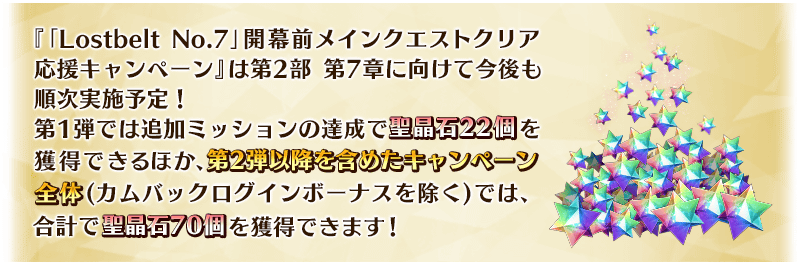
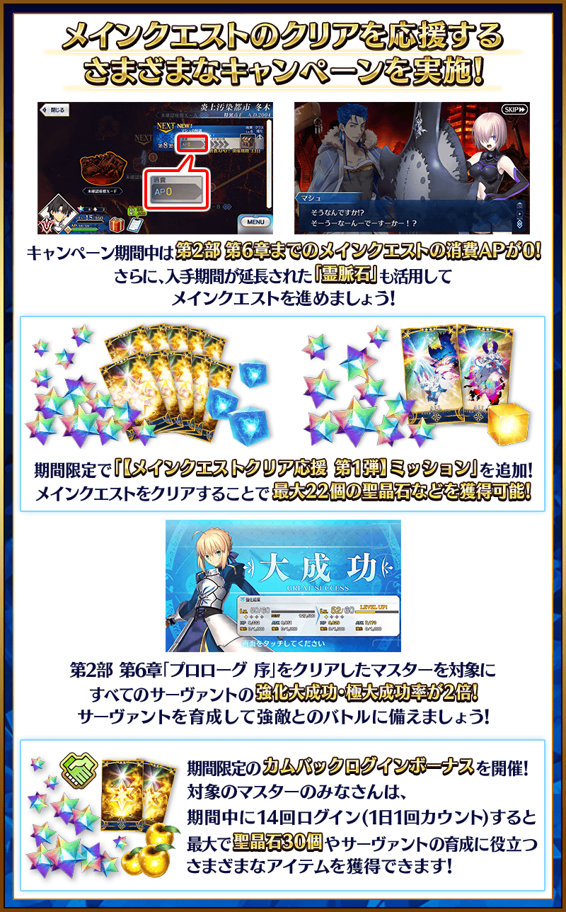

【公告的主要追記・更新履歴】 ■李奧納多・達・文西(Rider)的靈衣開放權獲得關卡在達文西工房的「靈衣縫製」追加！(11/28追記) NEW
【12月19日(一) 17:00更新】
為了邁向預定12月25日(日) 17:00開幕的第2部 第7章「黃金樹海紀行 冥界紀元」開幕，舉辦『「Lostbelt No.7」開幕前主線關卡通過聲援宣傳活動 第1彈』！
由於第2部 第7章的開放條件為通過「非靈長生存圏 通古斯卡聖域」的後記(エピローグ)，活用本宣傳活動來通過主線關卡吧！
另外，第2部 第7章的攻略重點是運用大量的從者。
藉此機會推進從者的培育吧！
 ※12月19日(一) 17:00圖片更新

◆宣傳活動舉辦期間◆
2022年11月23日(三) 17:00～12月31日(六) 22:59
※本頁面皆為開發中圖片。會有與實際圖片相異的情況。

下述的期間中，第2部 第6章「Lostbelt No.6 妖精圓卓領域 阿瓦隆・勒菲 星辰誕生之刻」為止的主線關卡消耗AP變成0！
尚未通過到第2部 第6章的御主，請務必藉此機會活用！
◆舉辦期間◆
2022年11月23日(三) 17:00～12月31日(六) 22:59
◆對象關卡◆
・主線關卡第1部(從特異點F到終局特異點)
・主線關卡第2部(從第1章到第5章、第6章)
※請注意主線關卡第2部 第5.5章、第2部 第6.5章、亞種特異點(從Ⅰ到Ⅳ)、主線分支為對象外。 ※現在到主線關卡第2部 第6章為止的消耗AP是永久變成1/2的狀態。因此，宣傳活動結束後，該主線關卡的消耗AP會變成1/2。
下述的期間中，在「御主任務」的「限定」標籤內以期間限定追加「【主線關卡通過聲援 第1彈】任務」。
「【主線關卡通過聲援 第1彈】任務」有可靠推進主線關卡的進行度來達成的任務與可靠通過第2部 第6章的主線關卡來達成的任務2種。
※請注意「【主線關卡通過聲援 第1彈】任務」中追加的2種任務各自的舉辦期間、領取期間不同。
可靠推進主線關卡的進行度來達成的任務
在期間中可靠推進主線關卡的進行度來達成的任務。
達成所有任務的話，可得到聖晶石12個、睿智的業火ALL★5(SSR)40張、靈脈石10個！
◆舉辦期間◆
2022年11月23日(三) 17:00～11月30日(三) 11:59
◆領取期間◆
2022年11月23日(三) 17:00～12月7日(三) 11:59
◆追加任務◆
| 任務名稱 | 任務達成報酬 | |
|---|---|---|
|
【主線關卡通過聲援 第1彈】 推進第1部＆第2部 非靈長生存圏後記(エピローグ)為止的主線關卡的進行度1 |

|
聖晶石 1個 |

|
睿智的業火ALL★5(SSR) 3張 | |

|
靈脈石 2個 | |
|
【主線關卡通過聲援 第1彈】 推進第1部＆第2部 非靈長生存圏後記(エピローグ)為止的主線關卡的進行度2 |
|
聖晶石 1個 |
|
|
睿智的業火ALL★5(SSR) 3張 | |
|
|
靈脈石 2個 | |
|
【主線關卡通過聲援 第1彈】 推進第1部＆第2部 非靈長生存圏後記(エピローグ)為止的主線關卡的進行度3 |
|
聖晶石 1個 |
|
|
睿智的業火ALL★5(SSR) 5張 | |
|
|
靈脈石 2個 | |
|
【主線關卡通過聲援 第1彈】 推進第1部＆第2部 非靈長生存圏後記(エピローグ)為止的主線關卡的進行度4 |
|
聖晶石 2個 |
|
|
睿智的業火ALL★5(SSR) 5張 | |
|
|
靈脈石 1個 | |
|
【主線關卡通過聲援 第1彈】 推進第1部＆第2部 非靈長生存圏後記(エピローグ)為止的主線關卡的進行度5 |
|
聖晶石 2個 |
|
|
睿智的業火ALL★5(SSR) 8張 | |
|
|
靈脈石 1個 | |
|
【主線關卡通過聲援 第1彈】 推進第1部＆第2部 非靈長生存圏後記(エピローグ)為止的主線關卡的進行度6 |
|
聖晶石 2個 |
|
|
睿智的業火ALL★5(SSR) 8張 | |
|
|
靈脈石 1個 | |
|
【主線關卡通過聲援 第1彈】 推進第1部＆第2部 非靈長生存圏後記(エピローグ)為止的主線關卡的進行度7 |
|
聖晶石 3個 |
|
|
睿智的業火ALL★5(SSR) 8張 | |
|
|
靈脈石 1個 | |
※請注意舉辦期間與領取期間有所差異。 ※請注意與每週日23:00更新的普通任務(Weekly)不同欄位，超過領取期間的話無法入手報酬。 ※就算達成「【主線關卡通過聲援 第1彈】任務」，也不會計算在普通任務(Weekly)的任務進行度。 ※已經通過第2部 非靈長生存圏後記(エピローグ)為止的主線關卡情況，任務會自動達成。 ※主線關卡第2部 第5.5章、第2部 第6.5章、亞種特異點(從Ⅰ到Ⅳ)、主線分支為任務對象外，敬請注意。
◆能使用靈脈石的對象關卡◆
・主線關卡第1部(終局特異點為止)
・亞種特異點(從Ⅰ到Ⅳ)
・主線關卡第2部(第6.5章為止)
◆靈脈石的使用期限◆
2022年12月31日(六) 22:59
可靠通過第2部 第6章的主線關卡來達成的任務
在期間中可靠通過第2部 第6章的主線關卡來達成的任務。
達成所有任務的話，可得到聖晶石10個、稀有稜鏡1個、英靈結晶・日輪之芙芙ALL★4(ATK)1張、英靈結晶・流星之芙芙ALL★4(HP)1張！
◆舉辦期間◆
2022年11月23日(三) 17:00～12月31日(六) 22:59
◆領取期間◆
2022年11月23日(三) 17:00～2023年1月7日(六) 22:59
◆追加任務◆
| 任務名稱 | 任務達成報酬 | |
|---|---|---|
|
【主線關卡通過聲援 第1彈】 通過『Lostbelt No.6』的「序幕(プロローグ) 序」 |

|
稀有稜鏡 1個 |
|
【主線關卡通過聲援 第1彈】 通過『Lostbelt No.6(前篇)』 |

|
英靈結晶・日輪之芙芙 ALL★4(ATK) 1張 |
|
【主線關卡通過聲援 第1彈】 通過『Lostbelt No.6(後篇)』 |

|
英靈結晶・流星之芙芙 ALL★4(HP) 1張 |
|
【主線關卡通過聲援 第1彈】 通過『Lostbelt No.6(崩壞篇)』 |
|
聖晶石 10個 |
※請注意舉辦期間與領取期間有所差異。 ※請注意與每週日23:00更新的普通任務(Weekly)不同欄位，超過領取期間的話無法入手報酬。 ※就算達成「【主線關卡通過聲援 第1彈】任務」，也不會計算在普通任務(Weekly)的任務進行度。 ※已經通過第2部 第6章為止的主線關卡情況，任務會自動達成。 ※根據主線故事的進行度會有無法達成任務的情況。
下述的期間中，對滿足條件的御主對象，進行強化從者時的大成功(經驗值2倍加成)・極大成功(經驗值3倍加成)的發生率以期間限定變成2倍！
屆五機會培育從者吧！
◆舉辦期間◆
2022年11月23日(三) 17:00～12月31日(六) 22:59
◆成為對象條件◆
滿足以下條件的御主對象
・通過第2部 第6章「序幕(プロローグ) 序」
在「特異點修復聲援宣傳活動」，2022年10月27日(四) 17:00～11月30日(三) 11:59的期間有舉辦「在特異點修復時召喚的從者」做為對象「強化大成功・極大成功率2倍」。
就算在「特異點修復聲援宣傳活動」與『「Lostbelt No.7」開幕前主線關卡通過聲援宣傳活動 第1彈』雙方宣傳活動中成為「強化大成功・極大成功率2倍」對象的情況，效果不會重複，強化大成功・極大成功率仍是2倍。
對一定期間未登入的御主對象，以期間限定舉辦「回歸登入獎勵」。
在下述期間中，登入14次(1天算1次)的話，贈送聖晶石30個(聖晶石召喚最大11次份)與對培育從者有用的各種道具！
※(聖晶石召喚最多11次份)限在同一個聖晶石召喚進行的情況。
◆舉辦期間◆
2022年11月23日(三) 17:00～12月21日(三) 2:59
※期間內未登入的話無法領取。
◆贈送對象◆
滿足以下所有條件的御主對象
・2022年9月1日(四) 23:00～11月23日(三) 16:59的期間未進行登入
・2022年12月20日(二) 2:59前通過「特異點F 炎上汙染都市 冬木」
※上述時間前，在管理室(ターミナル)畫面的關卡橫幅必須要有「CLEAR」的文字顯示。
【回歸登入獎勵合計】 ・聖晶石 30個(聖晶石召喚最大11次份) ・友情點數 合計14,000pt(友情點數召喚70次份) ・睿智的猛火ALL★4(SR) 18張 ・黃金果實 18個
◆回歸登入獎勵的內容◆
| 登入次數 | 贈送內容 |
|---|---|
| 第1次 |
聖晶石 1個 友情點數 1,000pt 睿智的猛火ALL★4(SR) 1張 黃金果實 1個 |
| 第2次 |
聖晶石 1個 友情點數 1,000pt 睿智的猛火ALL★4(SR) 1張 黃金果實 1個 |
| 第3次 |
聖晶石 1個 友情點數 1,000pt 睿智的猛火ALL★4(SR) 1張 黃金果實 1個 |
| 第4次 |
聖晶石 1個 友情點數 1,000pt 睿智的猛火ALL★4(SR) 1張 黃金果實 1個 |
| 第5次 |
聖晶石 1個 友情點數 1,000pt 睿智的猛火ALL★4(SR) 1張 黃金果實 1個 |
| 第6次 |
聖晶石 1個 友情點數 1,000pt 睿智的猛火ALL★4(SR) 1張 黃金果實 1個 |
| 第7次 |
聖晶石 2個 友情點數 1,000pt 睿智的猛火ALL★4(SR) 1張 黃金果實 1個 |
| 第8次 |
聖晶石 2個 友情點數 1,000pt 睿智的猛火ALL★4(SR) 1張 黃金果實 1個 |
| 第9次 |
聖晶石 2個 友情點數 1,000pt 睿智的猛火ALL★4(SR) 1張 黃金果實 1個 |
| 第10次 |
聖晶石 3個 友情點數 1,000pt 睿智的猛火ALL★4(SR) 1張 黃金果實 1個 |
| 第11次 |
聖晶石 3個 友情點數 1,000pt 睿智的猛火ALL★4(SR) 1張 黃金果實 1個 |
| 第12次 |
聖晶石 3個 友情點數 1,000pt 睿智的猛火ALL★4(SR) 1張 黃金果實 1個 |
| 第13次 |
聖晶石 4個 友情點數 1,000pt 睿智的猛火ALL★4(SR) 1張 黃金果實 1個 |
| 第14次 |
聖晶石 5個 友情點數 1,000pt 睿智的猛火ALL★4(SR) 5張 黃金果實 5個 |
※第1次的回歸登入獎勵自2022年11月23日(三) 17:00以後配發。 ※之後的的回歸登入獎勵會在每天3:00配發。 ※合計14天內能領取，但根據開始遊戲的時間點，可能無法到此上限。

可入手「特異點修復聲援宣傳活動」中再登場「靈脈石」的登入獎勵的期間延長！
並且，在達文西工房的「魔力稜鏡交換」追加的「靈脈石」道具交換期間也延長！
◆可入手「靈脈石」的登入獎勵實施期間◆
2022年10月27日(四) 17:00～12月31日(六) 22:59
◆在「魔力稜鏡交換」追加的「靈脈石」交換期間◆
2022年10月27日(四) 17:00～12月31日(六) 22:59
◆「靈脈石」的使用期間◆
2022年10月27日(四) 17:00～12月31日(六) 22:59
【11月28日(一) 17:00追記】
在2020年舉辦的期間限定「Fate/Grand Order ～5th Anniversary～」中登場的「★5(SSR)李奧納多・達・文西(Rider)」靈衣「活潑的水手服」開放權獲得關卡在達文西工房的「靈衣縫製」追加！
用稀有稜鏡5個交換後，可入手上述靈衣開放權。
另外，有通過第2部序幕(プロローグ)「序／2017年 12月31日」的情況即可免費交換靈衣「活潑的水手服」開放權獲得關卡！
並且，也可獲得呼符1張做為靈衣開放權獲得關卡通過報酬。
◆追加時間◆
2022年11月28日(一) 17:00～
◆追加道具(永久)◆
| 追加道具 | 能交換條件 | 能交換次數 | 1次交換所需的 稀有稜鏡數 （免費化條件） |
|---|---|---|---|
| 靈衣「活潑的水手服」開放權獲得關卡 | ・通過「特異點F 炎上汙染都市 冬木」 ・未通過對象靈衣開放權獲得關卡 | 1回 |
5個 【免費化條件】 ・通過第2部序幕(プロローグ)「序／2017年 12月31日」 |
※追加到「靈衣縫製」的靈衣「活潑的水手服」開放權獲得關卡為永久，沒有交換期限。 ※關於已經取得交換對象靈衣開放權的玩家，無法交換。 ※在用稀有稜鏡5個交換靈衣「活潑的水手服」開放權獲得關卡後達成免費化條件的情況，會返還交換使用的稀有稜鏡5個到禮物箱。

「靈衣開放」是自強化畫面進行。
◆有關靈衣開放權的注意◆
※請注意未持有「★5(SSR)李奧納多・達・文西(Rider)」的情況，可入手靈衣開放權。但無法進行靈衣開放。
※「★5(SSR)李奧納多・達・文西(Rider)」的靈衣會隨著外觀變化一部份語音。
※「靈衣開放」後會自動切換戰鬥角色和外觀圖片。若想回到「靈衣開放」前的狀態和變成其他再臨階段的情況，可自從者詳細畫面變更。
※進行「靈衣開放」不會讓職階和能力等有所變化。
介紹李奧納多・達・文西(Rider)的靈衣開放後的寶具演出！
介紹開放靈衣「活潑的水手服」的「★5(SSR)李奧納多・達・文西(Rider)」寶具演出！
【12月19日(一) 17:00更新】
其他還有，『「Lostbelt No.7」開幕前主線關卡通過聲援宣傳活動 第4彈』など的情報公開中！
關於詳情，請自下述橫幅確認。
■『「Lostbelt No.7」開幕前主線關卡通過聲援宣傳活動 第4彈』詳細情報

■『「Lostbelt No.7」開幕前主線關卡通過聲援宣傳活動 第3彈』詳細情報

■『「Lostbelt No.7」開幕前主線關卡通過聲援宣傳活動 第2彈』詳細情報

■『「Lostbelt No.7」開幕前主線關卡通過聲援Pick Up召喚』詳細情報